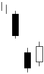

تحلیل تکنیکال
الگوهای کندل استیک ها
الگوهای ادامه دهنده نزولی
Downside Tasuki Gap

این الگو در میانه روند نزولی به وجود می آید. قبل از تکمیل دو شمع انتهایی الگو، شکاف نزولی همراه با شمع نزولی دیده می
شود شمع بعدي با اینکه صعودي می باشد اما تمام محدوده شکاف را پر نمی کند و با بسته شدن در محدوده شمع قبلی یا در
محدوده شکاف میتوان انتظار داشت بازار به روند نزولی خود ادامه دهد.